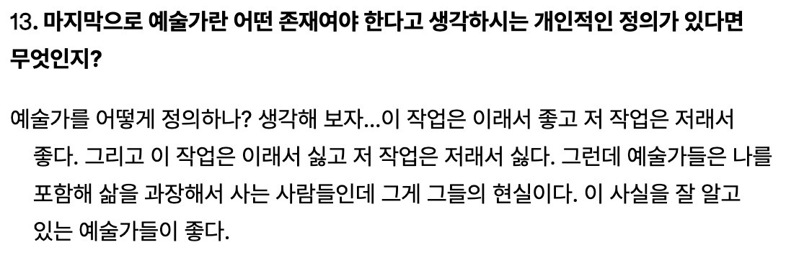
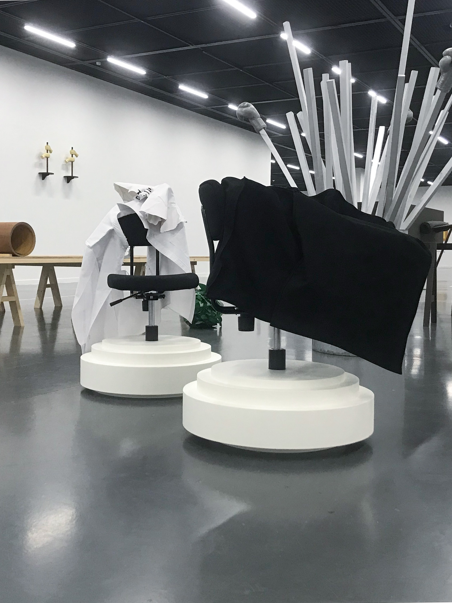
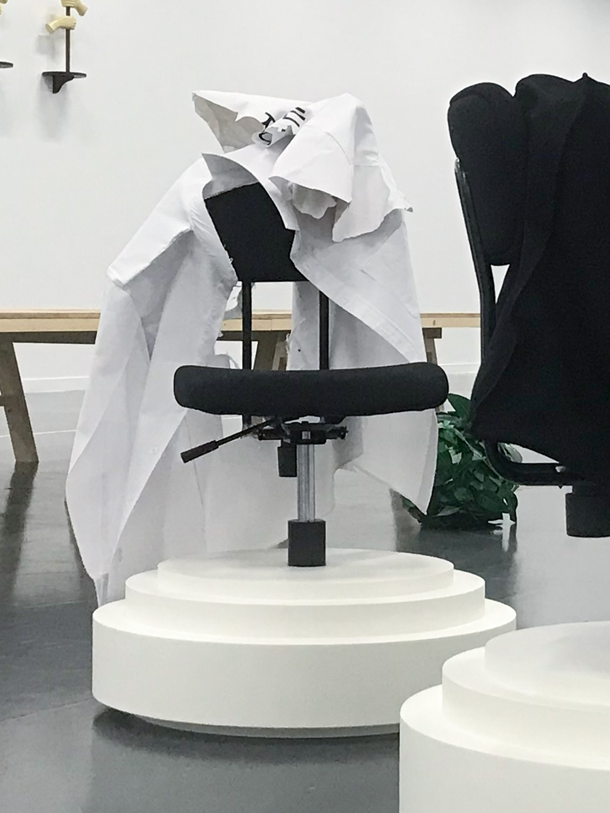
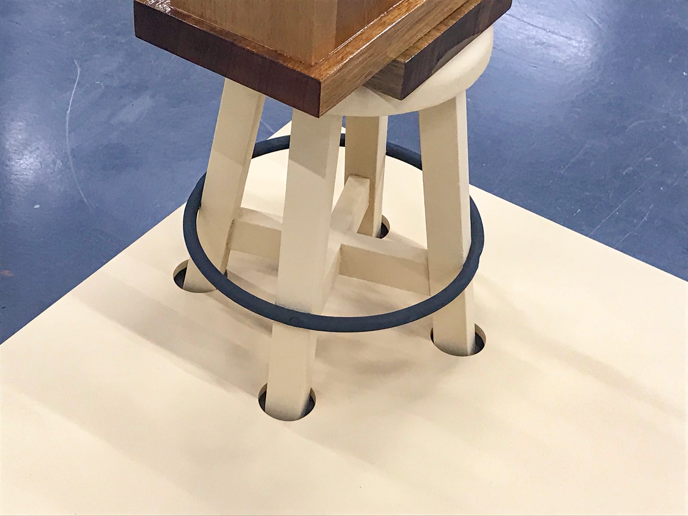
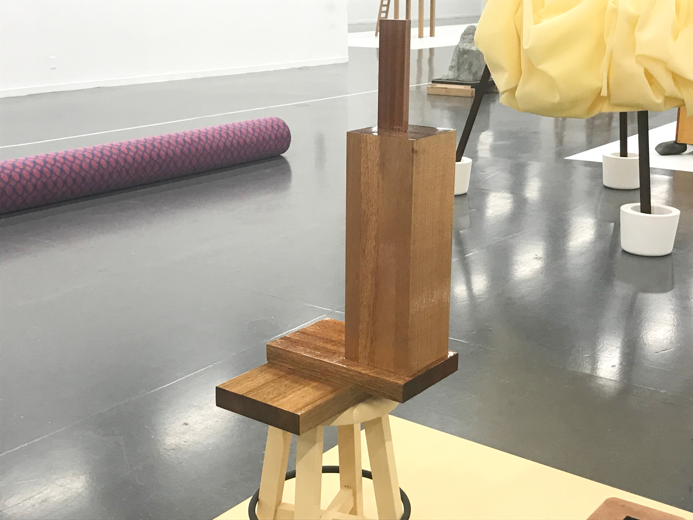

오늘이 좋아질 수 있다는 가능성
<
은수, 안녕하세요.
좋은 하루 보내고 있으신가요?
답장이 많이 늦었습니다. 저는 무언가를 잘 하고 싶다는 마음이 커질 때마다 해야할 일을 미루게 되는데요.
이번 정서영 개인전은 의미심장한 전시이기도 하고, 새로운 사람의 편지를 받는 게 오랜만이기도 해서 조금 긴장을 했나봅니다.
보내주신 감상을 쿠션 삼아 편안하게 이야기를 시작할게요.
지난 9월, 은수는 제게 보내주었던 메일에서 다음과 같이 말했습니다.
"2020년 바라캇 컨템포러리에서 <공기를 두드려서> 정서영 작가의 전시를 보았던 적이 있는데요.
그때 정서영 작가의 전시를 보고 나왔을 때, 서론 본론 결론이 아주 정교하고 세밀하게 짜여진 "아주 잘 쓰인 글" 한 편을 읽고 나온 느낌이었어요.
2022년 서울 시립미술관에서 본 <오늘 본 것>은 그때와는 다르게 정갈한 작가의 메모장을 한 장 한 장 살펴본 느낌이 들었네요."
저는 위 감상에 쓰인 내용들 중 '아주 잘 쓰인 글 한 편'과 '정갈한 작가의 메모장'이라는 비유에 눈이 갔습니다. 이번 전시 기획의 글을 쓴 이승아 큐레이터도 전시 <오늘 본 것>을 비슷한 내용으로 소개했던 게 떠올라서요.
"<오늘 본 것>은 작가가 매일 본 것 중 색상, 질감, 동세, 부분 등에서 무엇이라고 규정할 수 없는 인상적인 상태를 적어 두는 지난 몇 년의 습관을 전시 제목으로 삼은 것이다."
자신이 매일 본 것들 중 무엇이라고 규정할 수 없는 인상적인 상태를 적어 두는 습관.
저는 정서영의 조각이, 정서영이라는 한 사람의 일상에 스며있는 습관에서부터 시작된다는 사실이 좋습니다.
'예술이 어디로부터 발생하는지, 무엇으로부터 발생할 수 있는지.' 라는 질문에 대해 모두 각자의 답변이 있을텐데요.
그 중 제가 가장 큰 울림을 느끼는 경우는 '어느 한 사람이 자신의 삶에서 특정한 무언가를 비정상적으로 중요하게 여기게 될 때'이거든요.
이 생각은 2011년에 정서영이 참여했던 『공간』 1월호 인터뷰 기사 중 마지막 문답을 보며 구체화됐습니다.

저도 이번 전시 <오늘 본 것>을 정서영이 과장하기로 선택한 자신의 하루, 하루들을 기록한 메모장을 공유하는 시공간으로 보고 있습니다. 구체적인 작업들을 살펴보며 이야기를 계속할게요.
 
제가 이 전시를 보며 흠칫한 순간 중 하나는 위 <검은 의자, 흰 의자>를 처음 봤던 때였습니다.
의자의 높이를 조절하는 손잡이가 달려있는 사무 의자의 등받이에 흰색 천과 검은색 천이 걸쳐 있는 조각인데요.
저는 이 조각을 보고나서 은수가 말해주었던 '조각적 상태', 혹은 정서영이 말했던 '조각적인 순간'이란 이런 것이 아닐까? 하는 생각을 해보았습니다.
마치 쉬는 시간에 잠깐 바람을 쐬러 의자 등받이에 윗옷을 걸어둔 듯한 익숙한 모습, 그 인상을 의자 상단부에 천을 걸쳐둠으로써 고정시키고
의자 하단부를 하얀색 좌대로 대체하여 낯섦까지 가미된 조각을 완성시킨 듯하네요.
재료 정보를 찾아보니 '제스모나이트Jesmonite'라는 친환경 재료를 사용했다고 하더라고요.
<가운데 서고 가운데 눕고 가운데를 열어서 밖으로 나가 다시는 돌아오지 마라> 라는 조각도 비건 가죽을 사용한 것으로 알고 있는데,
이렇게 2022년에 만들어진 신작들에는 기존에 쓰이지 않았던 재료가 쓰였다는 점에 잠시 눈이 갔습니다.
<검은 의자, 흰 의자>가 일상에서 가장 가까운 곳에서 출발한 조각이라고 볼 수 있다면, 가장 먼 사례는 <전망대>라고 생각합니다.
아기처럼 몸이 아주 작은 사람들만 들어가서 쪼그려 앉을 수 있을 듯한 사이즈의 전망대.
그 아기자기한 작음을, '전망대'라는 분명한 용도의 한자어 이름을 통해 봤을 때 느껴지는 야무짐이 있는 조각인데요.
정서영은 이 조각을 '해외여행 중인 친구가 보낸 엽서에서 손톱만한 크기의 전망대 이미지를 보고 이 작은 사물의 이미지를 어떻게 '실제 경험'으로 전환할 것인지'에 대해 고민하며 시작했다고 합니다.
일상 생활에서 마주친 사물들에게서 받은 인상뿐만 아니라, 사진 엽서를 보며 주목하게된 이미지에서도 조각을 발생시켰다는 점이 흥미로웠어요.
정서영이 작가로서 활동했던 지난 30년(미술 작가로서 30년을 산다는 건 어떤 삶일까요?)동안 세상이 많이 바뀌었겠죠.
사람들이 중요하게 여기는 가치도 바뀌고 미디어 환경도 바뀌었을 것입니다.
세상이 바뀌고 환경이 바뀐다는 것은 그 환경에 속해 살고 있는 사람의 입장에서는 하루하루 보게되는 것, 느끼게 되는 것의 달라짐을 의미할텐데요.
물리적 현실에서부터 사진 이미지, 그리고 웹Web에서부터 작업이 출발하게 된다는 작가 정서영의 방향을 보고 있자면 정서영은 자신의 오늘날에 보이는 것을 그저 투명하게 보는 사람이 아닌가,
그 본 것들 중 기록해둘만한 것을 '조각이라는 매우 다른 사실의 차원으로 더 밀어내고 싶어'하는 의지, 혹은 가치 부여, 혹은 시간 투자 그 자체야말로 정서영이 고수하는 작가적 지형이 아닌가 하는 생각을 했습니다.
마지막으로 <GHOST WILL BE BETTER>와 <좋은 순간>에 대해 말하고 싶습니다.
나무로 만들어진 직사각형 합판 위에 원목마루 무늬의 비닐 장판이 약간의 공간을 남겨둔 채 펼쳐져 있네요.
장판 위에 있는 'GHOST WILL BE BETTER'라는 고딕체 문장이 눈에 띄며, 그 검은색 글자들과 말려있는 장판 사이에는 제스모나이트로 만들어진 유령 모양의 조각이 있습니다.
정서영의 다른 조각들이 가지고 있는 여러 특징이 이 조각에 모여있지 않은가 싶은데요.
첫번째로 'GHOST WILL BE BETTER'라는 문장, 이 조각의 제목이기도 한 이 문장은 어디로 향할까요?
막상 질문을 적어놨는데 대답이 곧바로 나오지는 않네요... ^^ <좋은 순간>을 보며 이어가보겠습니다.
'좋은 순간'이라는 이름을 통해 이 조각을 봤을 때, 저는 가장 처음 의자의 다리에 눈이 갔습니다.
은수가 언급한 것처럼 '의자는 가판 위에 올려져있지 않습니다. 나와 같은 땅에 서있지요.' 저는 이 다리가 바닥에 놓일 수 있게끔 가판에 알맞은 구멍들이 마련되어 있다는 사실이 시각적으로 흡족했는데요. 이러한 꼭 알맞음이 '좋은 순간'일 수도 있겠다는 생각을 하게된 후 눈에 들어온 것은

비대칭적으로 균형을 맞추고 있는 나무 블록들이었습니다.
'손가락으로 툭 치면 무너질 정도'는 아니지만 위태롭지도, 안정적이지도 않아 보이는 상태에서 서있는 친구들이었죠.
한번 더 생각해보면 이 균형 상태의 짜릿함을 두고 '좋은 순간'이라고 말할 수도 있겠더라고요.
비슷한 접근으로, 누군가는 이 조각을 보고 봉투와 사진에 '좋은 순간'이라는 제목을 겹쳐 볼 수 있겠죠.
'어떤 것을 바라보느냐에 따라서 계속해서 중심과 주변부의 경계가 흔들리게' 된다는 말씀을 이어보자면,
제목과 조각의 관계맺음이 어느 지점에서든지 가능하고 그 경계가 흔들릴 수 있다는 사실 자체를 정서영이 아주 잘 알고 적극적으로 활용한다고 느꼈습니다.
그런 점에서 제가 'GHOST WILL BE BETTER'라는 문장의 불가해함에 서성이며 형성하게된 그 문장에 대한 인상,
그 느낌은 하얀색 유령 모양 조각에 일정 부분 흡수된다고 느꼈습니다. 고딕체 문장이 아직 그 자리에 그대로 있는 데도 불구하고 말이죠.
비닐 장판과 나무 합판이라는 요소들을 가지고도 비슷한 생각을 해볼 수 있을 것 같습니다.
이렇게 사물과 조각, 언어 사이의 영향 관계를 끊임없이 고민하고 조정하며 조각이 나타날 수 있도록 몸을 움직이는 습관을 30여년동안 유지해온 정서영.
앞서 정서영은 예술가란 삶을 과장해서 사는 사람이라고 말했습니다.
이 관점을 본 전시에 그대로 적용시켜보면 정서영이란 사람은 자신이 오늘 마주한 특정한 무언가를 과장해서 사는 사람이라 볼 수 있고, 이를 줄여보면 오늘을 과장해서 사는 사람이라고 볼 수 있겠는데요.
저는 반대로 예술가란 삶을 간과하지 않는 사람이라고 생각합니다.
이 관점에서 정서영은 자신이 오늘 마주한 무언가, 중요하다고 직감한 무언가를 간과하지 않는 사람이고, 오늘을 간과하지 않는 그 습관 너머의 태도가 나는 정말 귀한 것이라고 생각합니다.
아무쪼록 이 편지를 즐겁게 읽으셨다면 좋겠습니다.
재훈 드림
무제
서은수
2022.09.09